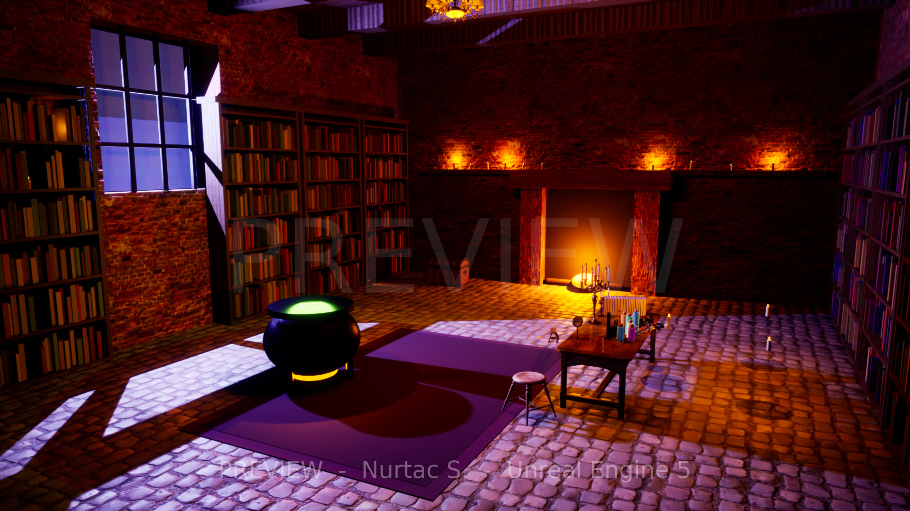
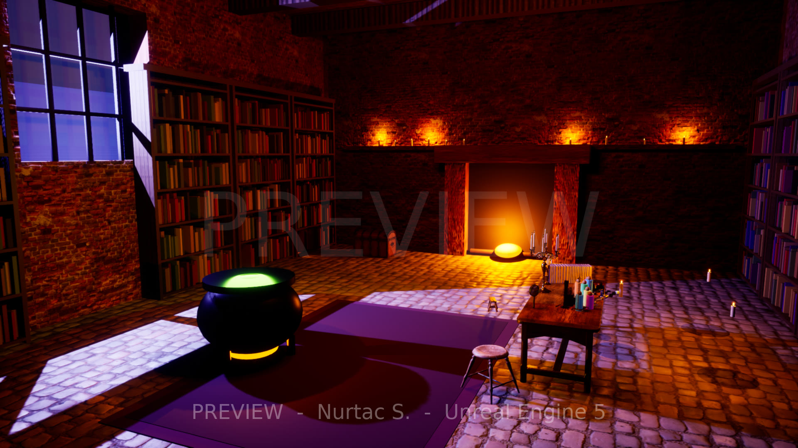
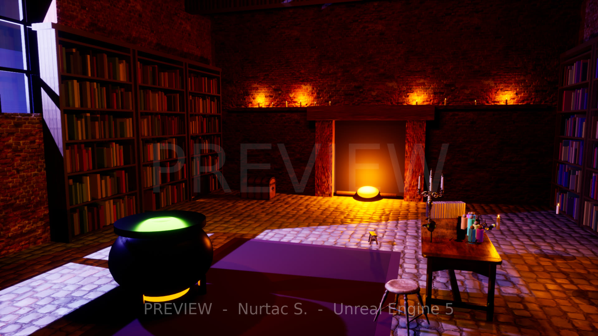
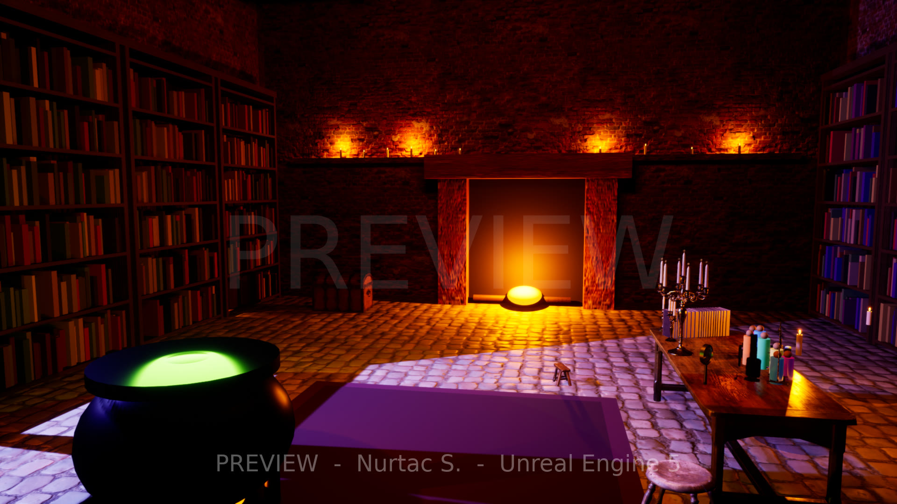
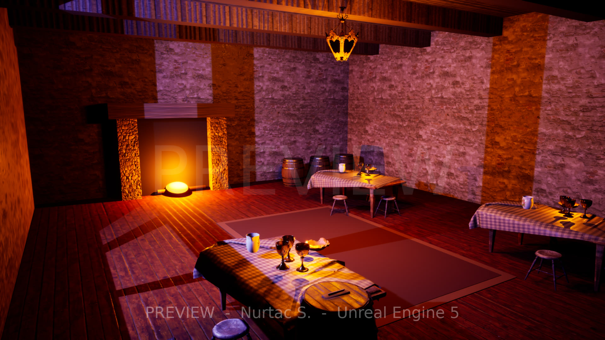
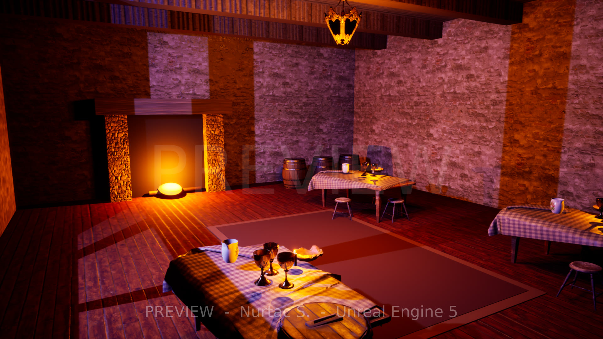
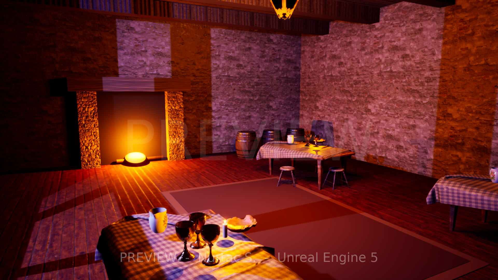
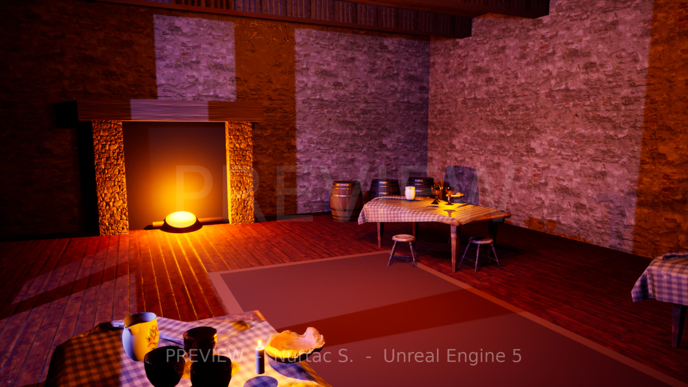

Stylized interior environments – Unreal Engine 5 (preview)
Two environment samples built and rendered in Unreal Engine 5.8 (Lumen lighting, Movie Render Queue). Everything is assembled by a reusable Python build script, so new rooms and revisions are fast. Previews are watermarked first-pass work, not final quality: they show the pipeline, lighting mood and composition.
Self-made vs. third-party: room architecture, materials setup, hero props, lighting, grade and camera are mine; set-dressing models and tiling textures are free CC0 assets from Poly Haven (no attribution required, credited anyway).
Alchemist's Library
Stylized-realistic interior: stone walls, wooden bookcases, centre table with alchemy props, cauldron hero prop, candle chandelier, cool violet-blue moonlight against warm candle and fireplace pools. Camera push-in, 1920×1080.




Made by me (in Unreal Engine)
- Room architecture: walls, floor, ceiling, beams, window with mullions
- Bookcases with hundreds of individually placed books (procedural, my own script)
- Cauldron hero prop (iron body, rim, legs, glowing potion), fireplace with logs and embers, rug, candle ledge and shelf candles
- Materials/UV tiling setup, all lighting (Lumen GI, candle point lights, moon rect light, volumetric fog), colour grade, camera animation and Movie Render Queue output
CC0 assets used
Models
- Wooden Table 01 – Ethan Place (Poly Haven, CC0)
- Chemistry Set – Jiří Ptáček (Poly Haven, CC0)
- Magnifying Glass 01 – Nazar Borodavka (Poly Haven, CC0)
- Brass Candleholders – Tina (Poly Haven, CC0)
- Book Encyclopedia Set 01 – John Malcolm (Poly Haven, CC0)
- Wooden Stool 01 – Kuutti Siitonen (Poly Haven, CC0)
- Wooden Stool 02 – Kuutti Siitonen (Poly Haven, CC0)
- Treasure Chest – Rico Cilliers (Poly Haven, CC0)
- Gothic Cabinet 01 – Kirill Sannikov (Poly Haven, CC0)
- Wine Barrel 01 – James Ray Cock (Poly Haven, CC0)
- Chandelier 02 – Kirill Sannikov (Poly Haven, CC0)
Textures
- Castle Brick Broken 06 – Rob Tuytel (Poly Haven, CC0)
- Cobblestone Floor 08 – Rob Tuytel (Poly Haven, CC0)
- Worn Planks – Dimitrios Savva (Poly Haven, CC0)
- Medieval Wood – Rob Tuytel (Poly Haven, CC0)
Medieval Tavern
A second interior in the same pipeline: warm hearth-lit tavern with tables, stools, barrels, goblets and hanging lantern. Camera push-in, 1920×1080.




Made by me (in Unreal Engine)
- Room architecture, window, ceiling beams, fireplace with fire glow, rug
- Scene layout, candles, lighting, volumetric fog, grade, camera path and render setup (same reusable script)
CC0 assets used
Models
- Dining Table – Aron Łyczek (Poly Haven, CC0)
- Brass Goblets – Tina (Poly Haven, CC0)
- Jug 01 – Kuutti Siitonen (Poly Haven, CC0)
- Wooden Bowl 01 – Oliver Harries (Poly Haven, CC0)
- Wooden Stool 01 – Kuutti Siitonen (Poly Haven, CC0)
- Wooden Stool 02 – Kuutti Siitonen (Poly Haven, CC0)
- Wine Barrel 01 – James Ray Cock (Poly Haven, CC0)
- Wooden Barrels 01 – James Ray Cock (Poly Haven, CC0)
- Wooden Crate 01 – James Ray Cock (Poly Haven, CC0)
- Lantern Chandelier 01 – Kirill Sannikov (Poly Haven, CC0)
Textures
- Rough Plaster Brick – Rob Tuytel (Poly Haven, CC0)
- Wood Floor Deck – Dimitrios Savva (Poly Haven, CC0)
- Stone Wall – Dario Barresi,Charlotte Baglioni (Poly Haven, CC0)
- Medieval Wood – Rob Tuytel (Poly Haven, CC0)
Preview renders, watermarked. Independent portfolio samples, not made for any client.